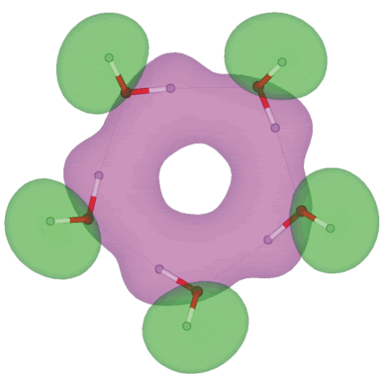
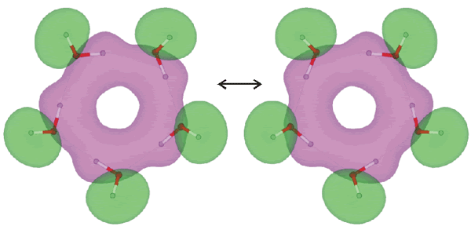

Molecular orbital 11 (of 25) for cis-(H2O)5

Shown above is the eleventh molecular orbital out of twenty-five, showing the electron overlap possible for extended hydrogen-bonding in the homodromic (running in the same direction) water pentamer (H2O)5 structure; an interactive structure with orbitals is available (COW [Plug-in, ActiveX] only), also without orbitals (Jmol). There are 13 topologically distinct configurations for this pentamer [2724]. The C5 -symmetric (H2O)5 structure is a local minimum-energy structure but not a global minimum for a pentamer a or even for a cyclic pentamer as all the non-hydrogen-bonded hydrogen atoms are cis; the global minimum for a water pentamer has a chiral mostly trans cyclic structure (Jmol) but also possesses a similar molecular orbital eleven (COW [Plug-in, ActiveX] only). The occupied molecular orbitals were calculated using the Restricted Hartree-Fock wave function (RHF) utilizing the 6-31G** basis set. The presence of extensive molecular orbitals allows the possibility that this planar pentameric structure may be responsible for the absorption at about 270 nm noticed in water under certain circumstances where it is thought not due to impurities [1328]. For comparison, chains of water molecules give a calculated absorption at about 288 nm, but this should shift to shorter wavelengths when surrounded by further water molecules [2083].
For both of these cyclic pentamers, the bond energies indicate that the cooperation of two hydrogen bonds increases the average bond strength by 22%, the cooperation of three hydrogen bonds increases the average bond strength by 40-41%, and the cooperation of all five hydrogen bonds increases the average bond strength by 52-53%. Water pentameric clusters can be produced by bubbling an inert gas through the liquid water followed by adiabatic expansion into a vacuum [837]. The vibrationally- averaged structure involving pseudorotation of the ring pucker is a planar structure with C5h symmetry.
The large orbitals indicated by semiempirical and density-functional computations [165] are supported by this ab initio method. Such orbitals, indicated in isolated clusters (that is, in vacuo), should be taken as indicative only of the type of orbitals that exist in liquid water clusters.
Pentamer synchronous flipping rearrangement

Synchronous oscillations (quantum tunneling, flipping) of protons (as above) have been shown to be coupled to vibrations of the oxygen skeleton of the molecular ring, and the typical frequencies of the complex vibrations lie in the range of 230-330 cm−1 [2053]. The ring O-H groups have an infrared stretch vibration at 3355 cm−1 (D2O 2477 cm−1) and Raman stretch vibration at 3310 cm−1 (D2O 2443 cm−1) [2125]. The tunneling pathways of the flip rearrangement between the (H2O)5 isomers have been analyzed in terms of the electronic structures [3878].
Symmetric and antisymmetric vibrational modes
Hydrogen bond-breaking dynamics in the water pentamer have been found to involve bifurcation tunneling [3308]. It has been shown that “coherent” H-bonds reinforce the metric stretching modes and restrict asymmetric stretching modes extremely powerfully, in contrast to incoherent H-bonds [3629]..
a There are 161 topologically distinct hydrogen-bonded pentamers (that is, consisting of five molecules) arrangements of water possible [517]. A computational study gives this ring (as the global minimum) a puckered conformation with one free hydrogen bond approximately at right-angles to the plane of the ring [1713]. [Back]
Home | Site Index | hydrogen-bonding | The water molecule | H4O2 molecular orbitals | LSBU | Top
This page was established in 2001 and last updated by Martin Chaplin on 5 August, 2021